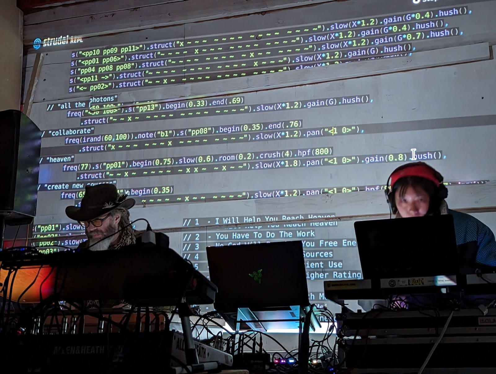
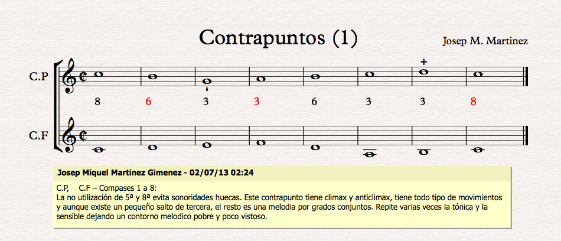
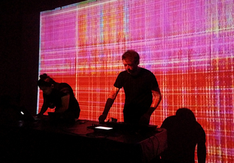
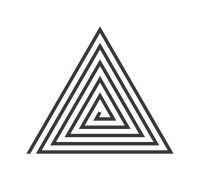
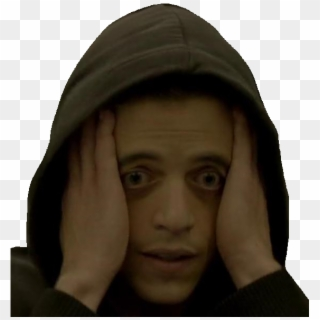
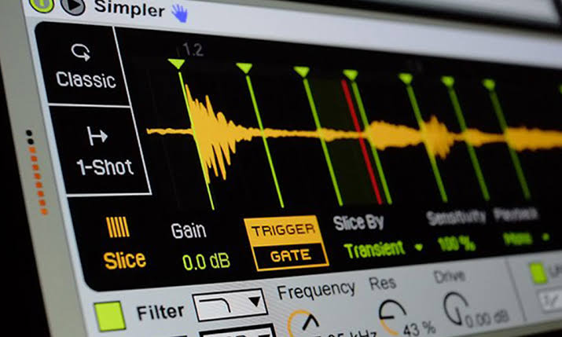

Taller de Strudel
Índice
- 1. Clase 1: Introducción a la programación y Strudel
- 1.1. ¿Qué es Strudel?
- 1.2. Objetivo del taller
- 1.3. Para qué puede servir
- 1.4. Composición algorítmica
- 1.5. ¿Qué es programar?
- 1.6. La interfaz
- 1.7. Documentación
- 1.8. Primeros sonidos
- 1.9. Drums o baterías
- 1.10. Cómo se mide el tiempo en Strudel
- 1.11. Cómo hacer sonar varios sonidos al mismo tiempo
- 1.12. Mini-notación
- 1.13. Atajos útiles
- 1.14. Repaso — Clase 1
- 1.15. Lectura recomendada
- 1.16. Comentarios
- 2. Clase 2: Live Coding, Sintaxis, notas, acordes y efectos
- 3. Clase 2.5: Efectos de audio y modulación
- 4. Clase 3: Sampling y efectos de sampler
- 4.1. Calentamiento: Análisis de código (10 min)
- 4.2. ¿Qué son los samples?
- 4.3. Samples por defecto
- 4.4. Bancos de sonido
- 4.5. Seleccionar sonidos
- 4.6. Cargando samples personalizados
- 4.7. De forma local
- 4.8. Efectos de Sampler
- 4.9. ¡Proyecto de la Clase 3! Añadir samples al proyecto
- 4.10. Grabar tus propios samples: Tab Sampler
- 4.11. Repaso — Clase 3
- 4.12. Retroalimentación
- 5. Clase 4: Síntesis
- 6. Clase 5: Pattern Functions o funciones de patrones
🚧 ¡Aviso! Esta página web está en construcción (Work in Progress). El material, los apuntes y los códigos de ejemplo se irán actualizando y construyendo semana a semana a medida que avanza el taller.
1. Clase 1: Introducción a la programación y Strudel
1.1. ¿Qué es Strudel?
Si bien tiene el mismo nombre que el postre alemán, Strudel es un entorno de programación en vivo. Usa un lenguaje de patrones algorítmicos basado en otro entorno llamado Tidal Cycles.
Dato curioso: En alemán, strudel significa remolino o torbellino.

Figura 1: Imagen de una actuación en vivo donde se hace live coding con Strudel.
Ejemplos de uso de Strudel: Playlist de ejemplos en YouTube
1.2. Objetivo del taller

El objetivo del taller es desarrollar habilidades de composición musical, pensamiento computacional y performance en tiempo real a través del live coding en Strudel.
1.3. Para qué puede servir

Puede servir cómo una herramienta pedagógica y como forma alternativa de crear y entender la lógica de la música, Strudel tiene diversas utilidades:
- Música en vivo con código
- Composición algorítmica
- Enseñar música y programación
- Notación alternativa
Como estudiantes de pedagogía en música, la idea del taller es ofrecer un acercamiento exploratorio a esta herramienta, valorando su potencial en la sala de clases ¿Qué es la composición algorítmica?
1.4. Composición algorítmica

Figura 2: Los fractales son un ejemplo de arte algorítmico: la repetición de instrucciones produce formas complejas.
"Como siempre he preferido hacer planes antes que ejecutarlos, he gravitado a situaciones y sistemas que, cuando están operando, pueden crear música con poca o nula intervención de mi parte. Eso es para decir, que tiendo hacia los roles de planificador y programador, y luego me vuelvo una audiencia para los resultados" — Brian Eno (Alpern, 1995) Traducido
Conocida en inglés como algorithmic composition (composición algorítmica) o automated composition (composición automatizada), la composición algorítmica en la música es la aplicación de un procedimiento formal para hacer música con la mínima intervención humana (Alpern, 1995)
1.4.1. ¿Qué es un algoritmo?
Un algoritmo es una secuencia de pasos lógicos o instrucciones para resolver un problema o ejecutar una tarea. Uno de los ejemplos en nuestra área son las reglas del contrapunto. Para crear un ejercicio de contrapunto que cumpla con las reglas de la tradición hay que aplicar una serie de pasos:

- Evitar quintas y octavas paralelas
- Ajustar al rango vocal de las voces
Y así. La verdad es que no recuerdo muy bien las reglas del contrapunto a estas alturas, pero por ahí va la idea.
1.5. ¿Qué es programar?
Programar es dar instrucciones a una computadora para resolver un problema, o cumplir un objetivo. La programación y los algoritmos están envueltos en muchas cosas de nuestro día a día, las aplicaciones que usamos en nuestros teléfonos, los tókens en el sistema de transporte (sea micro o metro), el funcionamiento de los semáforos y muchas más cosas.

Como dato curioso, la foto de arriba es de uno de los momentos que definió un término que usamos bastante en la actualidad. El 9 de septiembre de 1947, la científica de la computación y pionera en la informática Grace Hopper estaba trabajando en la computadora Harvard Mark II.
En ese momento las instrucciones a las computadoras se daban con perforaciones en papel. En una de estas instrucciones se metió un insecto que bloqueaba la señal, causando un error en el programa. Desde ese momento es que a los errores en un programa se les llama bugs (insecto en inglés).
Entonces, en Strudel estaremos programando música. Haciendo música con código.
1.6. La interfaz
Para empezar, ingresemos desde nuestra computadora a la página web de Strudel y mantengamos esa pestaña abierta.

En la esquina derecha tenemos cinco elementos:
- Play / Stop
- Reproduce sonido generado por el código en tiempo real, o lo para.
- Update
- Actualiza la reproducción en tiempo real, si silenciamos una elemento y apretamos update, no se escuchará.
- Share
- Permite compartir un link del estado actual del proyecto. Útil para compartir código, mostrar a amigos, o hacer el código público.
- Learn
- Es el botón que nos permite acceder a la documentación de Strudel en inglés.
El último elemento que queda son las tres barritas en la esquina derecha. Ese es un menú que iremos explorando más tarde, pero que como noción general nos permite configurar audio en strudel, exportar audio, importar y exportar patrones, e importar samples.

1.7. Documentación
La documentación será nuestra mejor amiga en este proceso, pero ¿Qué es la documentación?
Son las instrucciones, comentarios e información para usar un sistema particular de software o hardware. En este caso para usar Strudel. La documentación oficial de Strudel está disponible en línea.

Figura 3: La documentación de Strudel, sección Getting Started.
Si no sabemos cómo hacer algo, necesitamos acompañamiento o queremos resolver un problema, debemos ir primero a la documentación.
Uno de los grandes problemas de la documentación de Strudel a día de hoy es que no hay una traducción al español. Así pasa en general en el mundo de la informática. Entonces se hace importante recordar que si tienen alguna duda con la documentación, o necesitan ayuda a entenderla no duden en preguntarme.
1.8. Primeros sonidos
Para lograr hacer nuestros primeros sonidos, nos ayudaremos de la sección de primeros sonidos en la documentación.
Desafío -1: Primeros sonidos
- Reproduce el código de abajo
- Modifica el código para elegir otro sonido, reemplazando
casiopor cualquiera de estos:

sound("casio")
Desafío 0: Cambiar sample
- Reproduce el código de abajo
- Modifica el número después de el
:. Observa que sucede.
sound("casio:1")
Al hacer eso podemos elegir un sonido dentro de la librería de sonido casio, que como podemos ver en la sección de la configuración de Strudel -> Sounds -> Samples, tiene tres sonidos disponibles. Dice casio(3).

1.9. Drums o baterías

Strudel viene con sonidos por defecto para crear baterías:
- bd = bombo, bass drum o kick
- sd = caja o snare drum
- rim = rimshot
- hh = hihat
- oh = open hihat
- lt = low tom
- mt = middle tom
- ht = high tom
- rd = ride cymbal
- cr = crash cymbal
- Creemos un patrón:
En el patrón de abajo los cuatro bombos se reparten equitativamente en el ciclo. Prueba añadir un bd más.
sound("bd bd bd bd") // Cuatro bombos
- Cambiemos el banco de sonido: sounds -> drum machines -> RolandTR909
sound("bd bd bd bd").bank("RolandTR909") // Selecciona un banco de sonido
Podemos encontrar otros bancos de sonido de baterías en la configuración de Strudel -> Sounds -> drum-machines

Cambia el banco del cuadro anterior por otro de los que está en drum-machines.
Desafío 1: Crea tu propio patrón
Crea un patrón de baterías modificando los sonidos, o añadiendole más.
$: sound("bd hh sd oh")
1.10. Cómo se mide el tiempo en Strudel
En la mayoría de programas de música se usa la unidad BPM (Beats por minuto). Strudel expresa el tiempo en CPS (ciclos por segundo) con un valor por defecto de 0.5 cps.
sound("bd")
Acá el kick se repite cada dos segundos. Hagamos que sean cuatro kicks.
sound("bd bd bd bd")
Ahora hay cuatro kicks por ciclo, pero el patrón aún se reproduce a 0.5CPS, en términos de BPM diríamos que es cercano a 120 BPM. Veamos el siguiente:

sound("hh hh*2 hh*3 hh*4")
El ciclo se divide equitativamente en la cantidad de elementos dentro de sound separados por un espacio. Podría decirse que el ejemplo de arriba está en 4/4, y si le añadieramos dos sonidos más separados por espacios:
sound("hh hh*2 hh*3 hh*4 hh hh")
Quedaría en 6/4 o 6/8.
Entonces, es importante tomar en cuenta que el tiempo en Studel es cíclico, no linear. Para ahorrarnos el dolor de cabeza de pensar en CPS cuando estamos acostumbrados a BPM, podemos hacer otra cosa.
1.10.1. De CPS a BPM
Podemos usar la función setcpm(110) para establecer el tempo global en ciclos por minuto. setcpm(110/4) significa 110 ciclos por minuto y 4 beats por ciclo. El divisor son los beats por ciclo.
Siguiendo esta relación, la equivalencia entre cpm y cps sería que setcpm(x) es lo mismo que setcps(x / 60). Otra equivalencia es que setcps(110/60/4) es lo mismo que setcpm(110/4). Modifica los valores del ejemplo:
setcpm(120/4)
s("casio")._pianoroll() // ._pianoroll() nos permite visualizar el sonido, así vemos el ciclo en este caso
Ahora, añadamos una batería para poder observar la subdivisión dentro de un ciclo:
setcpm(120/4)
$: s("casio")._pianoroll()
$: s("bd sd bd sd")._pianoroll() // Divide el ciclo en cuatro partes iguales
1.11. Cómo hacer sonar varios sonidos al mismo tiempo
- Usar
$:antes de cada instrumento - Ejemplo: (copialo y pégalo si quieres escucharlo)
setcpm(130/4)
$: sound("bd:2(3,8)")
.lpf("100")
.hpf("1000")
$: sound("bd:6*4")
.lpf("100")
$: sound("< - - - sd>*4< - - - [sd sd]>*2")
.lpf("100")
$: sound("hh*4")
$: note("[0,3,7] [0,5,9]"
.add("20"))
.sound("sine")
.room(.8)
.lpf("1000")
.fm("10")
.fme("100")
$: sound("casio(3,8)-")
.room(0.5)
Desafío 2: Crear patrón con batería y otro sonido
En 5 minutos, crea dos patrones que suenen al mismo tiempo: uno con batería y otro con un sonido diferente.
// Desafio 2: Patron de bateria y otro sonido
$: sound("bd*4")
$: sound("casio")
1.12. Mini-notación
[ ]subdivisiones dentro del tiempo del ciclo-silencio*multiplicación/división
¿Qué hará esto?
sound("bd sd bd [sd sd sd]")sound("bd sd*6 bd sd")sound("bd sd bd/2 sd")sound("bd - bd sd")
1.13. Atajos útiles

Ctrl + EnterActualizar reproducción en tiempo realCtrl + Shift + /Comentar línea o bloque de código[ ]Silencia una línea de código y luego actualiza la reproducción.
Desafío 3: Crear notas
- Ayuda en la sección de primeras notas de la documentación
- Añade notas a
sound("casio")y luego cambia el sonidocasioa otro en sounds > samples. - ¿Cómo se podría cambiar el timbre del instrumento varias veces por ciclo?
// Desafio 3: Crear notas
$: sound("casio")
Desafío 4: Modificar un ejemplo, cambiar notas y ritmo
Desde una de las creaciones en la galería de ejemplos, copia el código y experimenta cambiando valores. Además cambia o añade una batería y una melodía. Luego iremos explicando una a una en conjunto.
También puedes explorar:
- Strudel Market
- Awesome Strudel (colección de recursos)
// Desafio 4: Pega aqui el codigo de un ejemplo y modificalo
Desafío 5: Para la próxima semana
Haz una versión de alguna canción que te guste en Strudel. No debe ser necesariamente completa.
// Desafio 5: Tu cover de una cancion
1.14. Repaso — Clase 1
| Función | ¿Qué hace? | Ejemplo |
|---|---|---|
sound() / s() |
Selecciona un sample o sonido | s("bd hh sd") |
bank() |
Cambia el banco de sonido | s("bd").bank("RolandTR909") |
note() |
Define altura (nota o número) | note("c e g b") |
setcpm() |
Ciclos por minuto | setcpm(120/4) |
$: |
Ejecuta patrones en paralelo | $: s("bd*4") |
[ ] |
Sub-secuencias | s("bd [hh hh] sd") |
* |
Repetir más rápido | s("hh*4") |
/ |
Repetir más lento | s("hh/2") |
- |
Silencio | s("bd - sd -") |
1.15. Lectura recomendada
- ¿Por qué la gente hace live coding? — artículo académico (en inglés)
1.16. Comentarios
- ¿Qué les pareció esta primera clase?
- ¿Qué fue lo más dificil?
2. Clase 2: Live Coding, Sintaxis, notas, acordes y efectos
2.1. Repaso
- Composición algorítmica
- Cómo hacer patrones rítmicos
- Documentación
- Mini-notation
- Ciclos por segundo
- Stacking de varios sonidos ($:)
- Atajos útiles
2.2. La escena del live coding

- Traducido como programación en vivo
- Puede ser tanto de música como de visuales
- Se utiliza a menudo en las algoraves
2.3. Algoraves

- Algoritmo y raves
- total o predominantemente caracterizado por la emisión de una sucesión de golpes repetitivos.
- Evento en que gente baila con música generada a partir de algoritmos, generalmente hechos con live coding.
- Puede tener diversos estilos
Algunos ejemplos de video:

2.4. Vamos a Strudel
Para esta sección, puede ser útil revisar el repaso en la documentación.
Vamos a (Código para sesión 2) para ver el patrón preparado para la sesión 2.

2.5. Repaso — Clase 2
| Función | ¿Qué hace? | Ejemplo |
|---|---|---|
note() |
Nota en letras o números | note("c e g b") |
scale() |
Interpreta n() como grado de escala | n("0 2 4").scale("c:major") |
chord() |
Acorde por nombre | chord("<C G Am F>") |
<> |
Un elemento por ciclo | note("<c e g>") |
@ |
Alargar duración | note("c e@2 g") |
! |
Replicar | note("c!2 e g") |
, |
Sonar al mismo tiempo | note("c,e,g") |
room() |
Reverberación | note("c").room(0.5) |
delay() |
Eco / delay | s("bd").delay(0.5) |
lpf() |
Filtro paso bajo | s("sawtooth").lpf(800) |
hpf() |
Filtro paso alto | s("sawtooth").hpf(200) |
pan() |
Paneo estéreo | s("bd").pan(0.8) |
gain() |
Volumen | s("hh").gain(0.5) |
2.6. Retroalimentación
- ¿Que fue lo que más les costó?
- ¿Qué otras cosas les gustaría aprender a hacer en strudel?
2.7. Recomendaciones
- Si quedan interesados por más, pueden revisar en YouTube los canales de Switch Angel, DJDave, Groovin in G y matt mull.
- Revisar esta playlist de ejemplos y tutoriales con live coding, eventos en vivo y más.
3. Clase 2.5: Efectos de audio y modulación
3.1. Calentamiento: Análisis de código (10 min)
¿Qué creen que hace este código? Léanlo línea por línea antes de ejecutarlo.
setcpm(120/4)
$: s("hh*8").gain("[.25 1]*4")
$: s("bd*4, [~ sd:1]*2")
$: note("<[c2 c3]*4 [bb1 bb2]*4 [f2 f3]*4 [eb2 eb3]*4>")
.sound("sawtooth").lpf("200 1000 200 1000")
$: note("<[c3,g3,e4] [bb2,f3,d4] [a2,f3,c4] [bb2,g3,eb4]>")
.sound("sawtooth").vowel("<a e i o>")
Preguntas:
- ¿Por qué el
gaintiene[.25 1]*4? ¿Qué efecto rítmico crea? - ¿Qué hace
lpf("200 1000 200 1000")distinto alpf(800)? - ¿Qué son las vocales en
vowel? ¿Conocen ese efecto en música electrónica?
3.2. Filtros
Los filtros permiten recortar frecuencias del sonido, como si abriéramos o cerráramos una ventana al ruido. Son herramientas fundamentales en la música electrónica.
3.2.1. Filtro paso bajo: lpf
lpf = low pass filter. Deja pasar las frecuencias bajas y corta las altas. Cuanto más bajo el valor, más muffleado (apagado) suena. Pensalo como estar afuera del boliche con la puerta cerrada 🚪.
note("<[c2 c3]*4 [bb1 bb2]*4 [f2 f3]*4 [eb2 eb3]*4>")
.sound("sawtooth").lpf(800)
Desafío A: Abrir la puerta
Cambia el valor de lpf:
- A 200: ¿cómo suena?
- A 5000: ¿cómo suena?
- En patrón:
"200 1000 200 1000"
note("<[c2 c3]*4 [bb1 bb2]*4 [f2 f3]*4 [eb2 eb3]*4>")
.sound("sawtooth").lpf(800)
3.2.2. Filtro paso alto: hpf
hpf = high pass filter. Lo opuesto: deja pasar las frecuencias altas y corta las bajas. Útil para crear efectos de radio o teléfono, o para que un instrumento no pise el rango del bajo.
$: note("c e g b").sound("sawtooth")
.hpf("<200 1000 3000>") // escuchá cómo se va vaciando el sonido
3.3. Timbre y dinámica
3.3.1. Filtro formante: vowel
vowel aplica un filtro formante que hace que el sonido imite la resonancia de las vocales. Muy usado en música electrónica y house.
note("<[c3,g3,e4] [bb2,f3,d4] [a2,f3,c4] [bb2,g3,eb4]>")
.sound("sawtooth").vowel("<a e i o>")
3.3.2. Volumen: gain
gain controla el volumen. En música, la dinámica (los cambios de volumen) es fundamental para crear interés rítmico.
$: sound("hh*16").gain("[.25 1]*4")
$: sound("bd*4, [~ sd:1]*2")
Desafío B: Dinámica
- Sacá el
.gain(...)del hihat. ¿Cómo suena? - Volvelo a poner (Ctrl+Z)
- Prueba con
"[.1 .5 1]*4"o inventa tu propio patrón de volumen
$: sound("hh*16").gain("[.25 1]*4")
$: sound("bd*4, [~ sd:1]*2")
3.4. Efectos espaciales
3.4.1. Reverberación: room
room simula el espacio acústico donde suena el instrumento. Valores altos = sala grande (catedral). Valores bajos = sala pequeña o sin reverb.
n("<4 [3@3 4] [<2 0> ~@16] ~>")
.scale("D4:minor").sound("gm_accordion:2")
.room(2)
3.4.2. Eco: delay
delay agrega ecos del sonido. El primer número es la cantidad de delay (0 a 1). Se puede especificar más:
.delay(".8:.125")→ el segundo número es el tiempo entre ecos.delay(".8:.06:.8")→ el tercero es cuánto se desvanece cada eco
$: note("[~ [<[d3,a3,f4]!2 [d3,bb3,g4]!2> ~]]*2")
.sound("gm_electric_guitar_muted").delay(.5)
$: sound("bd rim").bank("RolandTR707").delay(".5")
3.4.3. Paneo: pan
pan controla la posición en el campo estéreo. 0 = completamente izquierda, 1 = completamente derecha, 0.5 = centro.
sound("numbers:1 numbers:2 numbers:3 numbers:4")
.pan("0 0.3 .6 1")
Desafío C: Pequeña canción con efectos
Combina lpf, gain, vowel, room y delay en un patrón. Prueba quitar y agregar cada efecto para escuchar la diferencia.
setcpm(120/4)
$: sound("hh*8").gain("[.25 1]*4")
$: sound("bd*4,[~ sd:1]*2")
$: note("<[c2 c3]*4 [bb1 bb2]*4 [f2 f3]*4 [eb2 eb3]*4>")
.sound("sawtooth")
// .lpf(?)
// .vowel(?)
$: note("<[c3,g3,e4] [bb2,f3,d4] [a2,f3,c4] [bb2,g3,eb4]>")
.sound("sawtooth")
// .room(?)
// .delay(?)
3.5. Envolvente: ADSR
La envolvente controla cómo evoluciona el volumen de una nota en el tiempo. ADSR = Attack / Decay / Sustain / Release.
- Attack
- cuánto tarda en llegar al volumen máximo
- Decay
- cuánto tarda en bajar al nivel de sustain
- Sustain
- nivel de volumen mientras se mantiene la nota
- Release
- cuánto tarda en silenciarse cuando termina la nota
note("c3 bb2 f3 eb3")
.sound("sawtooth").lpf(600)
.attack(.1)
.decay(.1)
.sustain(.25)
.release(.2)
Desafío D: Explorar ADSR
Modificá los valores uno por uno y escuchá el resultado:
attack: prueba.5vs0decay: prueba.5vs0sustain: prueba1vs.25vs0release: prueba0vs.5vs1
note("c3 bb2 f3 eb3")
.sound("sawtooth").lpf(600)
.attack(.1)
.decay(.1)
.sustain(.25)
.release(.2)
Notación abreviada: .adsr("attack:decay:sustain:release")
note("c3 bb2 f3 eb3")
.sound("sawtooth").lpf(600)
.adsr(".1:.1:.5:.2")
3.6. Tempo del patrón: fast y slow
fast y slow cambian la velocidad de un patrón. Son equivalentes a * y / en mini-notation, pero aplicados a todo el patrón.
sound("bd*4, ~ rim ~ cp").slow(2) // el doble de lento
// También acepta patrones:
sound("[bd*4,~ rim ~ cp]*<1 [2 4]>")
3.7. Modulación con ondas (Signals)
En lugar de poner un valor fijo, podemos usar una onda como valor. Esto hace que el parámetro cambie continuamente en el tiempo, de forma automática.
sound("hh*16").gain(sine) // el volumen sube y baja como una ola
Las ondas disponibles son:
| Onda | Forma | Sonido |
|---|---|---|
sine |
Senoidal suave | Cambio gradual y cíclico |
saw |
Diente de sierra | Sube gradual, baja abrupto |
square |
Cuadrada | Alterna entre dos valores |
tri |
Triangular | Sube y baja linealmente |
rand |
Aleatoria | Valores al azar cada ciclo |
perlin |
Aleatoria suave | Valores aleatorios pero continuos |
3.7.1. Rango: range
Por defecto las ondas oscilan entre 0 y 1. Con range podemos cambiar eso:
sound("hh*16").lpf(saw.range(500, 2000))
// Con slow para que el ciclo dure más:
note("<[c2 c3]*4 [bb1 bb2]*4 [f2 f3]*4 [eb2 eb3]*4>")
.sound("sawtooth")
.lpf(sine.range(100, 2000).slow(4))
Desafío E: Automatizar con ondas
Agrégale una onda a alguno de los efectos de abajo. Prueba sine, saw, rand y perlin. Usa .range() para que el valor tenga sentido musical.
setcpm(120/4)
$: sound("hh*8").gain(sine) // ← onda en gain
$: note("c e g b").sound("sawtooth")
.lpf(sine.range(200, 3000)) // ← onda en lpf
.room(0.3)
3.8. Repaso — Clase 2.5
| Función | ¿Qué hace? | Ejemplo |
|---|---|---|
lpf() |
Filtro paso bajo (oscurece) | .lpf(800) |
hpf() |
Filtro paso alto (adelgaza) | .hpf(500) |
vowel() |
Filtro formante de vocal | .vowel("<a e i o>") |
gain() |
Volumen / dinámica | .gain("[.25 1]*4") |
room() |
Reverberación | .room(2) |
delay() |
Eco | .delay(".5:.125") |
pan() |
Paneo estéreo | .pan("0 1") |
attack() |
Tiempo de ataque (ADSR) | .attack(.1) |
decay() |
Decaimiento (ADSR) | .decay(.1) |
sustain() |
Sostenido (ADSR) | .sustain(.5) |
release() |
Liberación (ADSR) | .release(.2) |
adsr() |
ADSR abreviado | .adsr(".1:.1:.5:.2") |
fast() |
Acelerar patrón | .fast(2) |
slow() |
Ralentizar patrón | .slow(2) |
sine / saw / rand |
Modulación con onda | .gain(sine) |
.range(a,b) |
Rango de una onda | sine.range(200,2000) |
3.9. Retroalimentación
- ¿Qué efecto les resultó más interesante?
- ¿Cómo podrían usar
gaincon ondas para hacer algo musical?
4. Clase 3: Sampling y efectos de sampler
4.1. Calentamiento: Análisis de código (10 min)
Antes de empezar con material nuevo, vamos a leer código juntos. El objetivo es que puedan leer un patrón de Strudel y predecir qué va a hacer antes de ejecutarlo.
¿Qué creen que hace este código? Léanlo línea por línea.
setcpm(130/4)
$: s("bd(3,8), hh*8, [~ sd]*2")
.bank("RolandTR909")
$: note("<[c3,g3,e4] [f3,c4,a4]>")
.s("piano")
.room(0.4)
.clip(0.7)
$: note("c2 ~ f2 ~".slow(2))
.s("sine")
.lpf(400)
Preguntas para guiar el análisis:
- ¿Cuántos patrones suenan al mismo tiempo?
- ¿Qué hace el
(3,8)en la batería? - ¿Qué está haciendo
<>en la melodía? - ¿Qué efecto tiene
clip(0.7)? - ¿Qué pasa con el bajo si sacamos el
.slow(2)?
4.2. ¿Qué son los samples?
Un sample es una pieza de audio que es usada como la base de la generación de un sonido, que pasa por varias transformaciones. La música hecha con samples puede ser pensada como un collage de sonido.

Un ejemplo de una canción popular que use samples es Somebody That i Used To Know de Gotye https://youtu.be/ra7uxAbsvFY o One More Time de Daft Punk https://www.youtube.com/watch?v=5QwOpRh-IfI.
4.3. Samples por defecto
En el caso de Strudel, ya viene con un mapa de samples que a estas alturas ya conocemos. Recurso útil: https://www.youtube.com/watch?v=CNJKqWRCLM8&t=923s
$: s("bd sd [~ bd] sd,hh*16, misc")
Acá añadimos la función s para reproducir diferentes samples y hacer un beat de batería.
4.4. Bancos de sonido
Si abrimos la pestaña de sounds y luego drum-machines podemos ver que todos los samples de batería tienen un prefijo de nombres de drum-machines: RolandTR808_bd, RolandTR808_sd, RolandTR808_hh etc..
$: s("RolandTR808_bd RolandTR808_sd,RolandTR808_hh*16")
4.5. Seleccionar sonidos
Dentro de sounds > drum-machines podemos ver que cada sample tiene un número antes de cada nombre indicando cuantos samples individuales hay disponibles. Por ejemplo RolandTR909_hh(4) significa que hay cuatro samples de un hi-hat de TR909 disponibles. Por defecto, s reproducirá el primer sample, pero podemos seleccionar otros usando n partiendo desde 0.
Tip: En general en la programación las listas y los conteos de números siempre empiezan desde 0, es decir que 0 es el primer elemento.
$: s("hh*8").bank("RolandTR909").n("0 1 2 3") // hay 4 samples disponibles
_$: s("hh*8").bank("RolandTR909").n("0 1 2 3 4 5 6 7") // si pasan el último se devuelve al primero. Saca el guión para desmutear
Los números que sobrepasen el número máximo de samples (en este caso 4, si contamos desde 0, 1, 2, 3) pasarán de vuelta al primero y seguirán así de forma consecutiva.
Otra forma que ya hemos visto para seleccionar los sonidos es con mini notation.
s("bd*4,hh:0 hh:1 hh:2 hh:3 hh:4 hh:5 hh:6 hh:7")
.bank("RolandTR909")
4.6. Cargando samples personalizados
Puedes cargar samples usando la función samples.
4.7. De forma local
Puedes cargar samples de forma local desde la interfaz. Vamos al botón de opciones en Strudel (las tres líneas horizontales) > sounds > import-sounds.

Luego apretamos el botón de import sounds folder y ahí seleccionamos una carpeta que tengamos con samples.

Luego de apretar el botón de subir (dependiendo de tu sistema operativo puede cambiar la interfaz) ya podemos usar los samples, y podemos verlo desde el botón sounds > user.

En este caso es el sonido gustos_taller(4).
Descarga la carpeta de sonidos gustos_taller e importala a Strudel, para luego usarla. Será enviada por Whatsapp.
4.7.1. Desde un repositorio
Además de poder hacerse de forma local, se puede hacer desde repositorios online. En este caso la más común es Github (https://github.com/). Es una plataforma que permite almacenar, administrar y colaborar en proyectos de programación usando un sistema de control de versiones. Es parecido a Google Docs, en el sentido de que si alguien hace un cambio en el documento, aparecerá en las versiones.
En Github normalmente suben repositorios con samples listos, desde drum breaks, hasta samples en general. Un ejemplo de esto es https://github.com/yaxu/clean-breaks.

Dentro de la carpeta sounds podemos encontrar cada sample.

Y si volvemos atrás y clickeamos el archivo strudel.json podemos ver un diccionario que nos dice nombre: archivo_sample. En strudel los usaremos de la siguiente forma:

Es importante que nos fijemos que la estructura será samples(github:nombre_de_usuario/nombre_de_repositorio).
samples('github:yaxu/clean-breaks')
s("amen")
Importa los samples desde el repositorio a Strudel, y selecciona uno de los sonidos dentro del json.
Tip: Dentro de sounds podemos ver los sonidos importados una vez que carga el repositorio dentro de Strudel, no avisa pero se carga unos segundos para mostrarte todos los samples disponibles.
4.8. Efectos de Sampler
Los efectos de sampler son funciones que modifican cómo se reproduce un sample: dónde empieza, dónde termina, a qué velocidad, cómo se divide. Son distintos de los efectos de audio (reverb, delay, filtros), que modifican el sonido ya reproducido.
4.8.1. Recortar: begin y end
Todo sample tiene un punto de inicio (begin) y un punto de fin (end). Por defecto, se reproduce el sample completo (0 = inicio, 1 = fin del sample). Podemos mover esos puntos para usar solo una parte.
// end recorta el final del sample
// 1 = sample completo, .5 = primera mitad, .1 = solo el inicio
s("bd*2, oh*4").end("<.1 .2 .5 1>").fast(2)
// begin mueve el punto de inicio
samples('github:tidalcycles/dirt-samples')
s("breaks165").begin("<0 .25 .5 .75>").slow(2)
Desafío 6: Recortar samples
Usa begin y end para recortar el break de abajo. Prueba distintos valores entre 0 y 1. ¿Qué ritmo nuevo puedes crear?
samples('github:tidalcycles/dirt-samples')
$: s("breaks165").slow(2)
// .begin(?) -- ¿dónde empieza?
// .end(?) -- ¿dónde termina?
4.8.2. Detener samples: cut
En el estilo de las drum-machines clásicas, cut detiene un sample en reproducción cuando otro del mismo grupo de corte empieza a sonar. El ejemplo típico es el hihat abierto que se silencia cuando llega el hihat cerrado. Ambos deben tener el mismo número de grupo.
s("[oh hh]*4").cut(1)
Desafío 7: Hihat abierto y cerrado
Prueba el código con y sin .cut(1). ¿Qué cambia en el sonido? Luego experimentá con el timing del oh y el hh.
$: s("oh hh oh [oh hh]")
// añadí .cut(1) a ambos y escuchá la diferencia
4.8.3. Velocidad y tono: speed
speed cambia la velocidad de reproducción del sample. Velocidad más alta = tono más agudo. Velocidad negativa = reproducción al revés.
$: s("bd*6").speed("1 2 4 1 -2 -4")
Desafío 8: Melodía con speed
Usa speed para crear una melodía con el sample de abajo. Velocidad 1 = tono original, 2 = octava arriba, 0.5 = octava abajo. Los números negativos reproducen al revés.
samples({ rhodes: 'https://cdn.freesound.org/previews/132/132051_316502-lq.mp3' })
$: s("rhodes*4").speed("1 1.5 2 0.75")
// prueba otros valores, incluso negativos
4.8.4. Síntesis granular: chop
chop divide el sample en N partes iguales y las reproduce en orden. Es una técnica llamada síntesis granular: tomamos un sonido y lo "picamos" en granos más pequeños, creando texturas y ritmos nuevos a partir de cualquier audio.
loopAt(n) ajusta la velocidad del sample para que dure exactamente N ciclos, sincronizándolo con el tempo.
samples({ rhodes: 'https://cdn.freesound.org/previews/132/132051_316502-lq.mp3' })
$: s("rhodes")
.chop(4) // divide en 4 partes
.rev() // invierte el orden de las partes
.loopAt(2) // ajusta para que dure 2 ciclos
Desafío 9: Granular con chop
Experimentá con chop en el break de abajo. Cambia el número de cortes, agrega .rev(), prueba .loopAt() con distintos valores.
samples('github:tidalcycles/dirt-samples')
$: s("breaks165")
.chop(8) // prueba: 4, 8, 16, 32
// .rev()
// .loopAt(2)
4.8.5. Granular avanzado: slice y splice
slice divide el sample en N partes y las reproduce según una secuencia de números que tú eliges, dándote control total sobre el orden de los granos. Puedes remezclar un break sin tocar nada.
samples('github:tidalcycles/dirt-samples')
$: s("breaks165")
.slice(8, "0 1 <2 2*2> 3 [4 0] 5 6 7".every(3, rev))
.slow(0.75)
splice funciona igual pero ajusta la velocidad de cada trozo para que dure exactamente lo que le corresponde en el patrón:
samples('github:tidalcycles/dirt-samples')
$: s("breaks165")
.splice(8, "0 1 [2 3 0]@2 3 0@2 7")
Desafío 10: Remezclar un break con slice
Reordenar los trozos del break cambiando la secuencia. Los números van de 0 a N-1 (si cortas en 8, de 0 a 7). Puedes usar mini-notation en la secuencia.
samples('github:tidalcycles/dirt-samples')
$: s("breaks165")
.slice(8, "0 1 2 3 4 5 6 7") // reordenalo acá
.slow(2)
4.9. ¡Proyecto de la Clase 3! Añadir samples al proyecto
Tomá el proyecto que venías construyendo (con batería, melodía y bajo) y añadile samples. La idea es combinar las técnicas de sampling con lo que ya sabés de patrones y efectos.
Requisitos mínimos:
- Cargar al menos un sample desde GitHub
- Aplicar
chop()oslice()a algún sample - Usar
cut()en la batería (ej: hihat abierto/cerrado) - Modificar algún sample con
beginoend
Andamiaje: si no sabés por dónde empezar, copiá esto y modificalo:
Proyecto Clase 3: Mi canción con samples
// Proyecto Clase 3 — Copiá acá tu proyecto y añadile samples
samples('github:tidalcycles/dirt-samples')
setcpm(120/4)
// --- BATERÍA ---
$: s("bd*4")
$: s("sd*2").room(.3)
$: s("oh hh oh [oh hh]").cut(1) // ← cut en hihats
// --- MELODÍA ---
$: note("c e g b")
// --- BAJO ---
$: note("c2*4")
// --- SAMPLE GRANULAR ---
// $: s("breaks165").chop(8).loopAt(2)
// --- SAMPLE CON BEGIN/END ---
// $: s("breaks165").begin(0.5).end(0.75).slow(2)
4.10. Grabar tus propios samples: Tab Sampler
Tab Sampler es una extensión del navegador que te permite grabar el audio de cualquier pestaña (YouTube, SoundCloud, Spotify, etc.) y guardarlo como archivo para usar en Strudel.
- Chrome: Tab Sampler en Chrome Web Store
- Firefox: Quick Tab Sampler en Firefox Add-ons
Demostración del proceso completo: grabar un fragmento con Tab Sampler, importarlo a Strudel y transformarlo con efectos de sampler.
4.10.1. ¿Cómo funciona el sampling?
Cuando sampleamos una canción, tenemos varias opciones:
- Sample completo: grabas toda la canción o un fragmento largo, y luego usas
begin~/~enden Strudel para moverte por él. - Sample cortado: grabas solo la parte que quieres — un compás, una frase, un golpe de batería — e importás eso directamente.
- Loop rítmico (drum break): grabas exactamente N compases (ej: 2 o 4) y usas
loopAt(N)para que Strudel lo sincronice con el tempo.
4.10.2. ¿Hay que cuantizar?
En Strudel no hay cuantización automática como en un DAW. Pero loopAt y fit compensan: ajustan la velocidad del sample para que encaje con el ciclo. Lo importante es que si quieres usar un loop rítmico:
- Graba lo más exacto posible (desde el primer golpe hasta el final del último compás)
- Usa
loopAt(n)donde N es el número de ciclos que quieres que dure
Si el sample no es rítmico (voz, textura, efecto), no importa tanto la precisión.
4.10.3. Workflow con Tab Sampler
- Instalá la extensión y fijala en la barra del navegador
- Abre la canción que quieres samplear (YouTube, SoundCloud, etc.)
- Reproducí la canción y activá la grabación cuando empiece el fragmento
- Detén cuando termine el fragmento que quieres
- Descargá el archivo (WAV o MP3)
- Importalo a Strudel desde el menú ≡ → Sounds → Import Sounds
- Usalo con
s("nombre_de_tu_sample")
Graba un sample de algo que les guste usando Tab Sampler e importalo a Strudel. Luego aplicale algún efecto de sampler (chop, begin~/~end, speed).
4.11. Repaso — Clase 3
| Función | ¿Qué hace? | Ejemplo |
|---|---|---|
samples('github:...') |
Carga samples desde GitHub | samples('github:yaxu/clean-breaks') |
begin() |
Punto de inicio del sample | s("amen").begin(.25) |
end() |
Punto de fin del sample | s("amen").end(.75) |
cut() |
Corta sample al llegar otro del mismo grupo | s("oh hh").cut(1) |
speed() |
Cambia velocidad/tono | s("bd").speed(2) |
chop() |
Síntesis granular (partes iguales) | s("amen").chop(8) |
loopAt() |
Sincroniza loop al ciclo | s("amen").loopAt(2) |
slice() |
Granular con secuencia propia | s("amen").slice(8,"0 1 3 2") |
splice() |
Como slice pero ajusta velocidad | s("amen").splice(8,"0 1 3") |
loop() |
Loop continuo | s("amen").loop(1) |
fit() |
Ajuste automático al evento | s("amen").fit() |
rev() |
Invierte el orden | s("amen").chop(8).rev() |
4.12. Retroalimentación
- ¿Qué fue lo que más les costó de esta sesión?
- ¿Hubo algún efecto que les pareció especialmente interesante?
- ¿Qué ideas tienen para usar sampling en su proyecto?